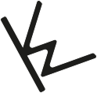

Ausgangspunkt
Starting Point
- Fragestellung
- Bedarf
- Kontext
- Verantwortung
- Question
- Need
- Context
- Responsibility
Portfolio
Kai Weber
Ich verstehe Gestaltung nicht nur als Formgebung, sondern als Auseinandersetzung mit ihrem sozialen, kulturellen und ökologischen Kontext. Deshalb arbeite ich nicht innerhalb einer einzelnen Disziplin, sondern wähle für jedes Projekt den Gestaltungsansatz, der die Aufgabe am besten löst.
I see design as more than shaping form. It is about engaging with its social, cultural, ecological, and economic context. Rather than working within a single discipline, I let each project determine the design approach it requires.
